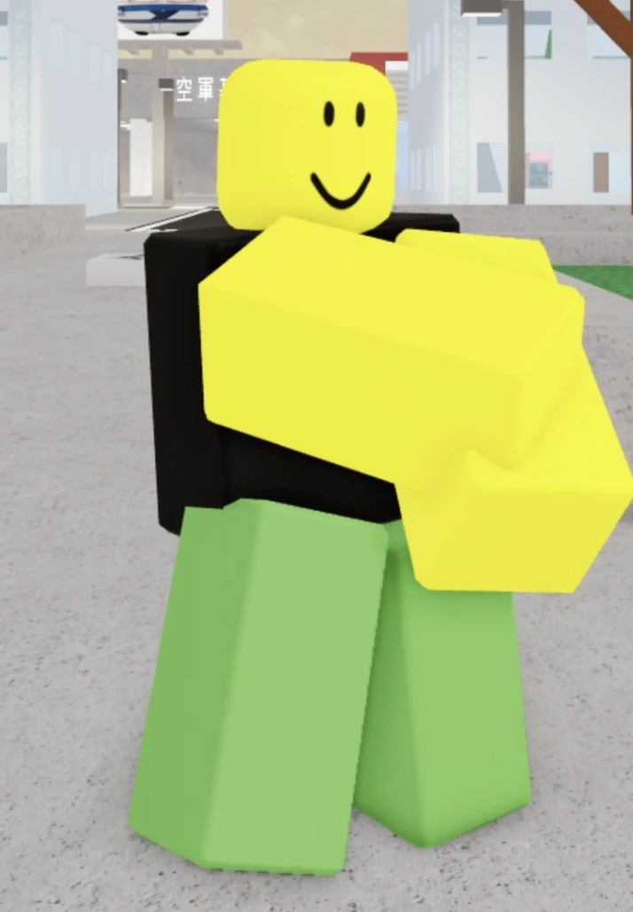
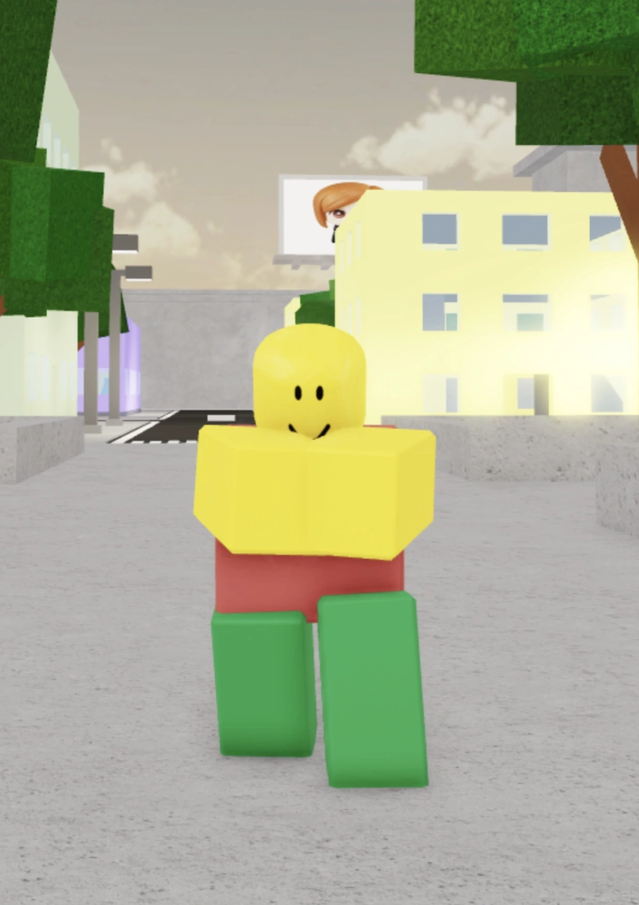

O único personagem capaz de criar um plano em 300 etapas, calcular cada movimento da partida, invocar metade do reino animal, acertar o combo mais absurdo que tu já viu. só pra entrar em desespero no segundo que alguém defende um golpe. O cara tem potencial pra destruir o mapa inteiro, mas luta como se a internet dele dependesse do emocional. Toda partida começa com “caralho, ele sabe combar wowwwww radicall” e termina com o Mahoraga sendo usado como botão universal de emergência. Aura infinita, adaptabilidade infinita e confiança negativa. PS: ou as vezes é um cara que fica no pc 24/7 no pc sem nem tomar sol.

O personagem mais quebrado e fdp q tu vai jogar contra ele olha pra uma ti pensando: "hm… Ja que eu sou o Aurudo, aura + ego, vou meter um combo infinito porque nao saio do meu pc”. Enquanto players normais usam a logica pra jogar, esse maluco literalmente usa anemia + pensamentos irracionais como recurso. O cara passa metade da partida parecendo que vai desmaiar e a outra metade arrancando 80% da tua vida com uma linha vermelha atravessando o mapa inteiro (se ele nao usar as bolinhas de convergência). E não importa onde tu tá: atrás da parede, no ar, no chão, aquela bosta de Piercing Blood VAI pegar em ti. Todo Blood Manipulator age como se fosse um gênio estrategista, mas no fundo tão só tentando acertar a hitbox mais criminosa já criada pela humanidade. Se tomou um combo dele, parabéns: tu se fodeu, só desiste ou kita do jogo logo.